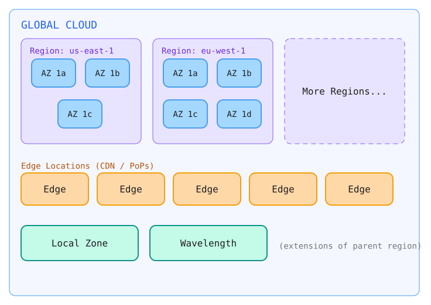
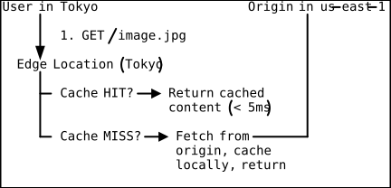
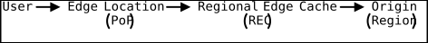
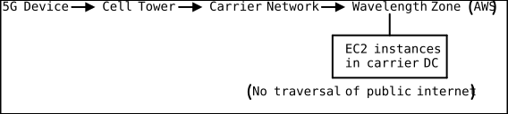
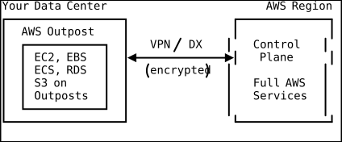
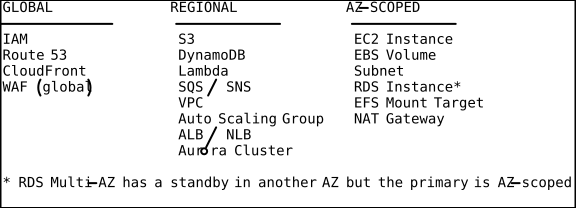

Cloud Global Infrastructure
Introduction
Every cloud application ultimately runs on physical hardware in a physical location. Understanding how cloud providers organize their global infrastructure is foundational to designing systems that are fast, resilient, compliant, and cost-effective. This document explores the layered hierarchy of cloud infrastructure — from the broadest geographic divisions down to individual edge locations — with a primary focus on AWS, and comparisons to Azure and GCP where they diverge.
The decisions you make at this layer (which region, how many AZs, whether to use edge locations) cascade into every other architectural choice: networking topology, data replication strategy, disaster recovery posture, and monthly spend.
The Infrastructure Hierarchy
+------------------------------------------------------------------+
| GLOBAL CLOUD |
| |
| +------------------+ +------------------+ +--------------+ |
| | REGION (e.g. | | REGION (e.g. | | REGION ... | |
| | us-east-1) | | eu-west-1) | | | |
| | | | | | | |
| | +----+ +----+ | | +----+ +----+ | | | |
| | | AZ | | AZ | | | | AZ | | AZ | | | | |
| | | 1a | | 1b | | | | 1a | | 1b | | | | |
| | +----+ +----+ | | +----+ +----+ | | | |
| | +----+ | | +----+ +----+ | | | |
| | | AZ | | | | AZ | | AZ | | | | |
| | | 1c | | | | 1c | | 1d | | | | |
| | +----+ | | +----+ +----+ | | | |
| +------------------+ +------------------+ +--------------+ |
| |
| +-------+ +-------+ +-------+ +-------+ +-------+ |
| | Edge | | Edge | | Edge | | Edge | | Edge | ... |
| | Loc. | | Loc. | | Loc. | | Loc. | | Loc. | |
| +-------+ +-------+ +-------+ +-------+ +-------+ |
| |
| +-------------+ +-------------+ |
| | Local Zone | | Wavelength | (extensions of parent region) |
| +-------------+ +-------------+ |
+------------------------------------------------------------------+
Regions
What Is a Region?
A region is a geographic area containing a cluster of data centers. Each region is
completely independent — it has its own control plane, its own set of services, and
operates autonomously. A failure in us-east-1 does not propagate to eu-west-1.
AWS currently operates 30+ regions globally. Azure has 60+ regions. GCP has 40+ regions. The numbers grow yearly as providers expand.
Naming Conventions
| Provider | Example | Pattern |
|---|---|---|
| AWS | us-east-1 | {continent}-{direction}-{n} |
| Azure | East US | Human-readable name |
| GCP | us-central1 | {continent}-{direction}{n} |
Region Selection Criteria
Choosing the right region is one of the most consequential early decisions. Changing regions later is expensive (data transfer, re-architecture, downtime). Evaluate on these axes:
1. Latency to End Users
The speed of light is non-negotiable. A packet traveling from Tokyo to a server in Virginia crosses approximately 11,000 km of fiber. Even at 2/3 the speed of light in fiber, that is roughly 55 ms one-way, or 110 ms round trip — before any processing.
Rule of thumb: deploy in the same continent as your heaviest user concentration. Use tools like CloudPing or the AWS Speed Test to measure real latency from target geographies.
2. Regulatory and Data Residency Compliance
Many jurisdictions mandate that certain data categories remain within national borders:
- GDPR (EU): Personal data of EU residents has strict transfer rules.
- PDPA (Singapore): Personal data must be protected during cross-border transfer.
- Data localization laws: Russia (Federal Law 242-FZ), China (Cybersecurity Law), India (proposed DPDP Act) all have requirements.
If you serve German healthcare customers, you likely need eu-central-1 (Frankfurt).
If you serve the Indian government, ap-south-1 (Mumbai) may be required.
3. Service Availability
Not all services launch in all regions simultaneously. New services typically debut
in us-east-1 and a handful of other regions, then roll out over months. Before
committing to a region, check the regional services list to confirm every service
in your architecture is available there.
# Check if a service is available in a specific region
aws ssm get-parameters-by-path \
--path /aws/service/global-infrastructure/regions/eu-north-1/services \
--query "Parameters[].Value" --output text4. Cost
Pricing varies across regions, sometimes by 10-20%. Regions in South America
(sa-east-1) and Asia Pacific tend to be more expensive than US regions. EC2
on-demand pricing in sa-east-1 can be 40% higher than us-east-1 for the
same instance type.
5. Disaster Recovery Geography
If your DR strategy requires a paired region, choose a primary and secondary that
are geographically separated but close enough that data replication latency is
tolerable. AWS does not prescribe region pairs (unlike Azure), so you choose your
own. Common pairings: us-east-1 + us-west-2, eu-west-1 + eu-central-1.
Multi-Region Architecture
For global applications, a single region is insufficient. Multi-region architectures provide:
- Lower latency for users worldwide
- Resilience against region-level outages (rare but real —
us-east-1has had significant outages) - Compliance with data residency laws in multiple jurisdictions
Multi-region adds substantial complexity: data synchronization, conflict resolution, DNS-based routing, and higher cost. Only adopt it when the business requirements (uptime SLA, global user base, regulatory mandates) justify the engineering overhead.
Availability Zones (AZs)
What Is an Availability Zone?
An Availability Zone is one or more discrete data centers within a region. Each AZ has independent power supplies, cooling systems, and physical security. AZs within a region are connected via high-bandwidth, low-latency private fiber links (often called “dark fiber”), with round-trip latency typically under 2 ms.
The critical design principle: an event that takes out one AZ should not affect another AZ in the same region. AZs are physically separated — often by several kilometers — to guard against localized disasters (fire, flood, power grid failure) while remaining close enough for synchronous data replication.
How AZs Are Identified
AWS maps AZ names to physical zones differently per account. Your us-east-1a may
be a different physical data center than another customer’s us-east-1a. This
prevents all customers from piling into the “first” AZ. Use AZ IDs (e.g., use1-az1)
for cross-account coordination.
# List AZs and their IDs in a region
aws ec2 describe-availability-zones \
--region us-east-1 \
--query "AvailabilityZones[].{Name:ZoneName, ID:ZoneId, State:State}" \
--output tableAZ Design Principles

Each AZ consists of one or more data centers. A single AZ might have three data centers, but they are treated as a single failure domain from the customer’s perspective. The inter-AZ links provide enough bandwidth for synchronous replication (EBS Multi-Attach, RDS Multi-AZ, etc.) without noticeable latency.
Designing for AZ Failure
The standard high-availability pattern is to distribute resources across at least two AZs (three is preferred). For example:
Auto Scaling Group:
- min: 4 instances
- desired: 6 instances
- max: 12 instances
- AZs: us-east-1a, us-east-1b, us-east-1c
Distribution: 2 instances per AZ
If AZ-a fails: ASG launches 2 new instances in AZ-b and AZ-c
Key services and their AZ behavior:
| Service | AZ Behavior |
|---|---|
| EC2 | Runs in exactly one AZ; use ASG for multi-AZ |
| EBS | Lives in one AZ; snapshots are regional |
| RDS Multi-AZ | Primary in one AZ, synchronous standby in another |
| Aurora | Storage layer spans 3 AZs (6 copies of data) |
| ALB | Requires subnets in at least 2 AZs |
| S3 | Automatically stores across >= 3 AZs |
| DynamoDB | Automatically replicates across 3 AZs |
Edge Locations and Points of Presence (PoPs)
What Are Edge Locations?
Edge locations are small data centers distributed globally, far more numerous than regions. AWS has 400+ edge locations across 90+ cities in 40+ countries. They serve a single purpose: bringing content closer to end users.
Edge locations host:
- CloudFront (CDN): Caches static and dynamic content at the edge
- Route 53 (DNS): Resolves DNS queries from the nearest edge location
- Lambda@Edge / CloudFront Functions: Runs lightweight compute at the edge
- AWS WAF: Filters malicious traffic at the edge before it reaches your origin
- AWS Shield: DDoS protection at the edge
How CloudFront Uses Edge Locations

Regional Edge Caches (RECs) sit between edge locations and origins. They have larger cache capacity and act as a mid-tier cache, reducing origin fetches for content that is popular enough to cache but not so popular that every edge location has it.

CloudFront Configuration Example
# CloudFormation - CloudFront Distribution
Resources:
Distribution:
Type: AWS::CloudFront::Distribution
Properties:
DistributionConfig:
Origins:
- Id: S3Origin
DomainName: !GetAtt Bucket.RegionalDomainName
S3OriginConfig:
OriginAccessIdentity: !Sub origin-access-identity/cloudfront/${OAI}
DefaultCacheBehavior:
TargetOriginId: S3Origin
ViewerProtocolPolicy: redirect-to-https
CachePolicyId: 658327ea-f89d-4fab-a63d-7e88639e58f6 # Managed-CachingOptimized
Compress: true
PriceClass: PriceClass_100 # US, Canada, Europe only
Enabled: truePoints of Presence vs Edge Locations
“Point of Presence” is the umbrella term. A PoP may contain edge locations plus Regional Edge Caches. In practice, the terms are often used interchangeably, but PoP is technically the broader concept (the physical facility housing one or more edge caches).
Local Zones
What Are Local Zones?
Local Zones are extensions of a parent region placed in large metro areas that do not have a full region. They bring select AWS services (EC2, EBS, VPC, ELB) closer to end users in specific cities, providing single-digit-millisecond latency.
Example: us-east-1-chi-1a is a Local Zone in Chicago, extending us-east-1.
Use cases:
- Real-time gaming servers requiring < 10 ms latency
- Media content creation and streaming
- AR/VR applications
- Financial trading where every millisecond matters
# Enable a Local Zone
aws ec2 modify-availability-zone-group \
--group-name us-east-1-chi-1 \
--opt-in-status opted-in
# Launch an instance in a Local Zone
aws ec2 run-instances \
--image-id ami-0abcdef1234567890 \
--instance-type c5.xlarge \
--subnet-id subnet-local-zone-chi \
--placement AvailabilityZone=us-east-1-chi-1aLocal Zones vs Regions
| Aspect | Region | Local Zone |
|---|---|---|
| Services | Full suite (200+) | Limited subset (~20 services) |
| AZs | 3+ | Typically 1 |
| Redundancy | Multi-AZ built-in | Rely on parent region for HA |
| Pricing | Standard regional | May be slightly higher |
| Data persistence | Full (S3, RDS, etc.) | EBS only; no S3, no RDS |
Wavelength Zones
What Are Wavelength Zones?
Wavelength Zones embed AWS compute and storage inside telecom providers’ 5G networks. Traffic from 5G devices reaches AWS infrastructure without leaving the carrier’s network, achieving ultra-low latency (under 10 ms).
Supported carriers include Verizon (US), Vodafone (UK, Germany), KDDI (Japan), SK Telecom (South Korea), and Bell Canada.
Use cases:
- Connected vehicles processing sensor data in real time
- Interactive live video streaming
- Cloud gaming on mobile devices
- IoT applications on 5G-connected sensors

Comparing Providers: AWS vs Azure vs GCP
Geographic Organization
| Concept | AWS | Azure | GCP |
|---|---|---|---|
| Top-level grouping | Partition (aws, aws-cn, aws-us-gov) | Geography (US, Europe, Asia Pacific) | Multi-region (us, europe, asia) |
| Data center cluster | Region | Region | Region |
| Failure domain | Availability Zone | Availability Zone | Zone |
| Edge caching | Edge Location / PoP | Azure PoP | Edge PoP |
| Metro extension | Local Zone | (no exact analog) | (no exact analog) |
| 5G edge | Wavelength Zone | Azure Edge Zones | Distributed Cloud Edge |
| Government isolated | GovCloud (separate) | Azure Government | Assured Workloads |
Azure-Specific: Region Pairs
Azure explicitly pairs regions for DR. For example, East US is paired with
West US. Data replication for certain services (GRS storage) follows these pairings.
Platform updates roll out to one region in a pair at a time. AWS does not enforce
pairing; you choose your own DR region.
GCP-Specific: Multi-Regions
GCP offers multi-region resources (e.g., multi-region Cloud Storage buckets) that
automatically replicate across multiple regions within a continent. The us
multi-region stores data across at least two US regions. This is a higher-level
abstraction than AWS provides natively (S3 cross-region replication must be
configured explicitly).
Data Residency and Sovereignty
The Regulatory Landscape
Data sovereignty is the concept that data is subject to the laws of the country where it is stored. Cloud providers give you tools to control placement, but compliance is ultimately your responsibility.
Key mechanisms in AWS:
- Region selection: Store data only in regions within the required jurisdiction
- S3 Object Lock and Bucket policies: Prevent cross-region copies
- AWS Organizations SCPs: Deny API calls that would create resources outside approved regions
{
"Version": "2012-10-17",
"Statement": [
{
"Sid": "DenyNonEURegions",
"Effect": "Deny",
"Action": "*",
"Resource": "*",
"Condition": {
"StringNotEquals": {
"aws:RequestedRegion": [
"eu-west-1",
"eu-west-2",
"eu-central-1",
"eu-north-1"
]
}
}
}
]
}- AWS Control Tower: Guardrails that enforce regional restrictions
- Data residency controls: AWS Dedicated Local Zones and Outposts for on-premises sovereignty
Sovereign Cloud Offerings
All three major providers now offer sovereign cloud options:
- AWS: Dedicated Local Zones, Outposts, and the European Sovereign Cloud (separate infrastructure operated by EU-based staff)
- Azure: Azure Sovereign Regions (Government, China operated by 21Vianet)
- GCP: Assured Workloads, T-Systems Sovereign Cloud (Germany)
AWS Outposts and Hybrid Edge
AWS Outposts
Outposts bring AWS infrastructure on-premises. AWS ships a rack (or smaller form factor) of hardware to your data center. It runs native AWS services (EC2, EBS, ECS, RDS, S3) managed by AWS, connected back to the parent region.

Use cases:
- Low-latency processing that must be on-premises
- Data residency requirements that prohibit cloud regions
- Migration bridge during cloud adoption
Practical Takeaways
Region Selection Checklist
[ ] Identify where your users are geographically
[ ] Check latency from target user locations to candidate regions
[ ] Verify all required services are available in the region
[ ] Review data residency / compliance requirements
[ ] Compare pricing across candidate regions
[ ] Plan DR: identify a secondary region
[ ] Check if the region has enough AZs (3+ preferred)
[ ] Evaluate edge location coverage for CDN use cases
AZ Distribution Best Practices
- Always deploy across at least 2 AZs; prefer 3 for production workloads.
- Use AZ-aware services (ALB, ASG, Aurora) that handle distribution for you.
- Never hard-code AZ names; discover them programmatically.
- Remember that some resources are AZ-scoped (EBS, EC2) while others are regional (S3, DynamoDB, IAM) or global (Route 53, CloudFront, IAM).
Resource Scope Reference

Cost Optimization Tips
- Use CloudFront’s
PriceClass_100to limit edge locations to cheaper regions (US, Canada, Europe) if you don’t need global coverage. - Deploy non-latency-sensitive workloads (batch processing, analytics) in cheaper
regions like
us-east-2(Ohio) instead ofus-east-1(Virginia). - Use S3 Intelligent-Tiering in your primary region rather than replicating to multiple regions for cost savings on infrequently accessed data.
DSA Connections
Consistent Hashing — Partition-to-AZ Data Distribution
Consistent hashing is a technique that maps data to nodes on a virtual ring, so that adding or removing a node only redistributes a small fraction of keys rather than reshuffling everything. Cloud providers use consistent hashing internally to distribute objects across Availability Zones and storage nodes within a region. When S3 stores an object across a minimum of three AZs, the storage layer uses a hash of the object key to determine which set of physical storage nodes will hold replicas, ensuring even distribution without a central lookup table. If an AZ goes offline, only the portion of the ring assigned to that AZ’s nodes needs re-replication, rather than a full data reshuffle — this is why S3 achieves 11 nines of durability while remaining resilient to AZ-level failures.
Quadtrees — Geospatial Indexing for Region and Edge Location Selection
A quadtree is a tree data structure where each internal node has exactly four children, recursively subdividing a two-dimensional space into quadrants. Cloud providers and DNS services like Route 53 use geospatial indexing structures similar to quadtrees to determine which edge location or region is closest to a requesting user. When a user in Tokyo makes a DNS query, the resolution system must rapidly find the nearest edge location among 400+ candidates worldwide. A quadtree-like spatial index partitions the globe into progressively smaller regions, enabling O(log n) lookup of the nearest PoP instead of computing distances to every edge location. This is the mechanism behind latency-based routing and GeoDNS, which direct users to the closest CloudFront edge or regional endpoint.
Graph Traversal (Dijkstra’s Algorithm) — CDN Routing and Multi-Region Traffic Paths
Dijkstra’s algorithm finds the shortest path between nodes in a weighted graph, where edge weights represent costs such as latency or hop count. The AWS global backbone network that connects regions, edge locations, and Regional Edge Caches is fundamentally a weighted graph, where nodes are PoPs and edges are fiber links with latency as their weight. When CloudFront routes a cache miss from a Tokyo edge location through a Regional Edge Cache to an origin in us-east-1, the network layer runs shortest-path calculations to determine the optimal fiber route across the Pacific. This is also how Global Accelerator selects the best path through the AWS backbone — it continuously evaluates network conditions and applies shortest-path routing to steer traffic away from congested or degraded links, achieving lower and more consistent latency than the public internet’s default BGP routing.
Summary
Cloud global infrastructure is a hierarchy of abstractions over physical data centers. Regions provide geographic isolation and data sovereignty. Availability Zones provide fault isolation within a region. Edge locations bring content and compute closer to users. Local Zones and Wavelength Zones extend regions into metro areas and 5G networks.
The choices you make at this layer — which region, how many AZs, whether to leverage edge — form the foundation of every system you build on top. Get them right early, because changing them later means migrating data, re-architecting networking, and potentially facing downtime. Build for at least two AZs from day one, choose your region based on users and compliance rather than habit, and layer edge locations on top when latency to end users matters.